Mackay Timelapse - Tier 1 pattern analysis
Generated 2026-10-29 11:35 from config.json - 1152 frames, one every ~1 min, processed at 960x540.
Every number below is derived from the frames themselves: no model weights, no manual annotation. The method is a per-frame median background, a geometric blob classifier and the temporal statistics of the resulting per-minute series.
1. What the capture actually covers
| session | first frame | last frame | frames | hours |
|---|---|---|---|---|
| 1 | Tue 27 Oct 09:35 | Tue 27 Oct 12:07 | 153 | 2.5 |
| 2 | Tue 27 Oct 12:42 | Wed 28 Oct 05:20 | 999 | 16.6 |
Missing stretches inside/between sessions: 12:42 (35 min).
Clock hours present: 00, 01, 02, 03, 04, 05, 09, 10, 11, 12, 13, 14, 15, 16, 17, 18, 19, 20, 21, 22, 23 - i.e. 21 of 24. Weekdays present: Tue, Wed.
2. Headline numbers
- Activity index (pedestrian-like blobs per frame): mean 3.34 overall, 4.58 in daylight, 2.47 at night -> 1.85x day/night.
- Frames with at least one pedestrian-like blob: 85% (98% by day, 77% by night).
- Busiest single frame: Tue 27 Oct 18:12 with 17 pedestrian-like blobs and 4 vehicle-like blobs.
- Alive threshold (25% of the 95th percentile of the smoothed series): 2.25 - smoothing window 5 min, minimum dwell 10 min.
3. When the street is alive
| from | to | min | peak at | peak blobs | mean blobs | peak smoothed |
|---|---|---|---|---|---|---|
| 09:35 | 12:00 | 146 | 11:24 | 6 | 5.96 | 10.0 |
| 12:52 | 13:02 | 11 | 12:52 | 1 | 3.82 | 5.0 |
| 13:58 | 15:14 | 77 | 14:35 | 8 | 6.51 | 12.0 |
| 15:29 | 15:57 | 29 | 15:38 | 5 | 3.45 | 5.0 |
| 16:02 | 16:11 | 10 | 16:02 | 2 | 4.70 | 5.0 |
| 16:15 | 16:52 | 38 | 16:15 | 4 | 3.97 | 5.0 |
| 17:48 | 19:15 | 88 | 18:05 | 16 | 8.84 | 16.0 |
| 19:20 | 19:30 | 11 | 19:20 | 3 | 5.00 | 6.0 |
| 19:45 | 19:55 | 11 | 19:55 | 3 | 3.45 | 5.0 |
| 20:17 | 20:26 | 10 | 20:17 | 5 | 3.40 | 3.0 |
10 window(s), 431 minutes in total (37% of the captured time) qualify as "alive". The longest is 146 min.
4. Short bursts (something happened)
A burst is a run of 2-10 minutes where the 5-minute smoothed activity index sits at least 2.0 robust sigma above a +-30 minute rolling baseline *and* at least 3 blobs above it. The ±30 min baseline keeps the detector from comparing a surge with itself, the excess gate keeps small night-time wobble (sigma is <1.5 blobs because counts are integers) from qualifying, and the length cap hands long surges to section 3 instead.
| peak (local) | z | peak blobs | min | ROI | vs surroundings |
|---|---|---|---|---|---|
| 2026-10-27 14:39 | 2.7 | 15 | 3 | junction | 1.80x |
| 2026-10-27 18:07 | 2.7 | 16 | 9 | junction | 1.40x |
| 2026-10-27 11:33 | 2.0 | 10 | 3 | junction | 1.21x |
| 2026-10-27 12:56 | 2.0 | 5 | 3 | north_walk | 1.80x |
| 2026-10-27 19:25 | 2.0 | 8 | 6 | junction | 2.07x |
| 2026-10-27 21:56 | 2.0 | 5 | 3 | junction | 2.50x |
| 2026-10-27 22:52 | 2.0 | 6 | 2 | junction | 2.14x |
Total bursts: 7. The strongest is at 2026-10-27 14:39:34 (z = 2.7). "vs surroundings" compares the mean activity inside the burst with the 15 minutes either side.
5. Vehicle stops, loading and standing traffic
A vehicle-like blob that is present in 2 or more consecutive frames while moving less than 12 px is a candidate stop (bus, shuttle, delivery, someone waiting at the kerb).
| from | to | min | ROI | max vehicle area | mean blobs |
|---|---|---|---|---|---|
| 09:37 | 09:51 | 15 | north_walk | 16365 | 5.40 |
| 09:53 | 09:54 | 2 | junction | 13767 | 6.00 |
| 09:56 | 10:00 | 5 | junction | 12572 | 4.80 |
| 10:06 | 10:10 | 5 | plaza | 12405 | 5.60 |
| 10:12 | 10:49 | 38 | north_walk | 8208 | 4.76 |
| 10:51 | 10:54 | 4 | north_walk | 2735 | 7.75 |
| 10:56 | 11:03 | 8 | north_walk | 1952 | 6.62 |
| 11:10 | 11:12 | 3 | north_walk | 2691 | 5.00 |
| 11:14 | 11:35 | 22 | north_walk | 9060 | 7.95 |
| 11:44 | 11:52 | 9 | north_walk | 7467 | 6.89 |
| 11:54 | 12:03 | 10 | north_walk | 6327 | 3.40 |
| 12:05 | 12:07 | 3 | junction | 3188 | 3.33 |
| 12:43 | 12:44 | 2 | junction | 1501 | 2.00 |
| 12:46 | 12:47 | 2 | junction | 2323 | 1.50 |
| 12:50 | 12:51 | 2 | junction | 4058 | 3.00 |
Candidate stops per ROI: junction 51, north_walk 50, plaza 1.
6. Cycles and periodicity
For each long gap-free session the pedestrian series is detrended and its spectrum inspected between 5 and 240 minutes. Only the single strongest peak is tested, and the null distribution is the maximum amplitude of 200 shuffled surrogates across the whole band - testing every frequency separately would guarantee a false positive (one bin in ~200 clears p = 0.05 by chance). A peak must also correlate with the series one period later, otherwise it is shape, not rhythm.
No peak in the 5-240 minute band beat its shuffled surrogates and correlated with itself one period later, so no cycle is reported. This is the expected result for a single day: the test is deliberately built so that the ~235 tested frequencies cannot manufacture a false cycle.
7. Where the people are (ROI ranking)
| ROI | kind | mean blobs | share | day mean | night mean |
|---|---|---|---|---|---|
| junction | road | 1.94 | 58% | 2.51 | 1.54 |
| north_walk | walk | 0.76 | 23% | 1.41 | 0.30 |
| colonnade | walk | 0.36 | 11% | 0.24 | 0.45 |
| plaza | walk | 0.28 | 8% | 0.42 | 0.18 |
Shares are of all pedestrian-like blobs that fall inside some ROI (blobs outside every ROI are ignored).
8. Static presence (queues, standing groups, parked vehicles)
Each frame is compared with a local reference: the pixel-wise median of the surrounding 40 min. Three things happen before the two are differenced, because each of them alone would light up the whole frame: every frame's 10-90 percentile range is stretched onto one common scale (the camera re-meters constantly, so raw grey levels are not comparable twenty minutes apart); each frame is phase-correlated and shifted onto the reference; and the local illumination field (12.0 px high-pass on a 2.0 px blur) is removed so a smooth shadow boundary is not mistaken for a queue. A pixel that stays more than 18 units of that scale (about 18% of the frame's own contrast range) away for at least 50% of a 10-minute bin counts as occupied. Speckle is dropped and long narrow bands (kerbs, awning edges, the lip of a ramp) are discarded, so what survives has to be an object-sized patch. That is how a person who stands still, a queue or a parked van is seen even though the median background absorbs it.
Read a share of a few percent as "something stood here". Once this pipeline is calibrated an average above ~10% of the watched area, or a single ROI above ~25%, usually means the area changed appearance rather than that a quarter of it was occupied - check those bins by eye. The first bin of each session is measured against a reference that only exists on one side of it, so treat that bin with extra suspicion.
| bin start | ROIs occupied | per ROI |
|---|---|---|
| 2026-10-27 09:40 | 5.9% | plaza 16.5%, junction 2.6%, north_walk 0.0%, colonnade 0.3% |
| 2026-10-27 09:30 | 4.9% | plaza 10.3%, junction 4.4%, north_walk 0.0%, colonnade 1.7% |
| 2026-10-27 16:10 | 3.3% | plaza 0.0%, junction 3.8%, north_walk 15.1%, colonnade 0.5% |
| 2026-10-27 11:50 | 2.9% | plaza 8.6%, junction 0.8%, north_walk 0.0%, colonnade 0.0% |
| 2026-10-27 11:10 | 2.4% | plaza 6.2%, junction 0.7%, north_walk 1.3%, colonnade 0.4% |
| 2026-10-27 18:10 | 2.3% | plaza 0.8%, junction 2.8%, north_walk 0.0%, colonnade 4.7% |
Average stable occupancy across all bins: 0.6% of the watched ROI area (night bins are usually empty, so a whole-day average is diluted).
9. Cross-check against hand-logged events
Nothing hand-logged yet, so there is nothing to check the automatic events against. Write out/events_manual.csv with columns start,label (e.g. 2026-10-27 17:40,bus stop), run python -m src.events, and this section will list every logged moment next to the nearest automatic event with the offset in minutes - the quickest way to find out whether a detector is off or the log is.
10. Reading the numbers
- Daylight averages 4.58 blobs/frame against 2.28 after 20:00 (2.0x). The whole night average is 2.47 because the evening peak at 18:12 falls after sunset - so read the night series as 'dusk is busy, late night is quiet' rather than as a single dark number, and remember a person is a much weaker blob under streetlights than in sunlight.
- The street behaves as "alive" for 431 minutes in total; the widest single window runs 09:35 -> 12:00.
- Most stationary-vehicle candidates sit in junction (51 of 102) - the place to look first if you are hunting for a bus stop, a loading bay or a kerbside pick-up.
- No cycle in the 5-240 minute band survived the band-max shuffle test, so the day's shape is better described by the alive windows of section 3 than by any periodicity.
- The busiest static-occupancy bin is 2026-10-27 09:40: 5.9% of the watched ROI area stayed occupied for most of the bin (driven by plaza at 16.5%).
11. Limits to respect before quoting these numbers
- Sampling: one frame per minute is a set of snapshots, not a flow measurement. Someone crossing in 12 s appears in roughly one frame; a 45 s bus stop frequently falls between two frames. Counts are indices, not footfall.
- Coverage: 21 of 24 clock hours on Tue, Wed only - no morning ramp, no weekend. Every "time of day" statement is confounded with "this particular day".
- Classifier: the pedestrian / vehicle split is purely geometric (height, width, area, solidity at 960x540). Groups merge into one blob, deep shadow and night reflections create false blobs, and a person carrying something large can be classed as a vehicle.
- Light, not people: a moving shadow edge, a cloud edge or a lamp flicker changes pixel values exactly like a person does. The detector fights this with exposure matching, a 3 px Gaussian blur and per-pixel background matching, and the
diff_fracpanel therefore still counts illumination change as well as activity - read it next ton_ped, never on its own. - Night: below the daylight cutoff the scene is lit unevenly, so the same changes are counted twice - once from lamp and window flicker, once from real people. Permanently hot pixels are suppressed (
hotspot_suppress: dark), but the night series is still the noisiest part of the report and is best read as "something moved", not as a head count. - Standing still is invisible to the activity series:
n_pedonly counts blobs that moved, so a queue is absent from it by construction - section 8 is where a queue would show. Presence has the mirror-image blind spot: anything that stays put for the whole +-40 min reference window is absorbed into that reference and disappears, so a van parked all afternoon proves nothing. - No tracking: blobs are per frame. Nothing here measures how long an *individual* stays, only how many blob-minutes each region accumulates.
- Correlation only: "activity rose while a vehicle stood still" is a co-occurrence. It is a lead for manual checking, not a causal claim.
12. Files
| file | contents |
|---|---|
| out/manifest.csv | one row per frame: EXIF time, brightness, noise, session |
| out/activity.csv | per-frame counts, areas, flow and per-ROI counts |
| out/presence.csv | stable-occupancy share per 10-min bin |
| out/alive_windows.csv | when the street is busy |
| out/bursts.csv | robust-z bursts |
| out/dwell_events.csv | stationary-vehicle candidates |
| out/periodicity.csv | spectrum peaks with shuffle p-values |
| out/event_context.csv | activity inside vs around every event |
| out/plots/*.png | the figures embedded in this report |
| out/thumbs/burst_*.jpg | frame strips around the top bursts |
Figures
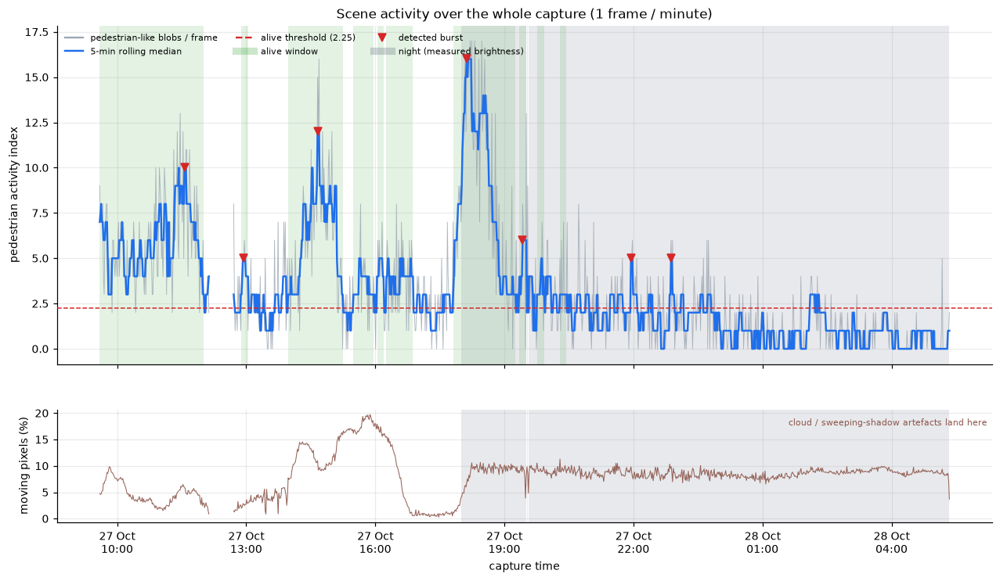
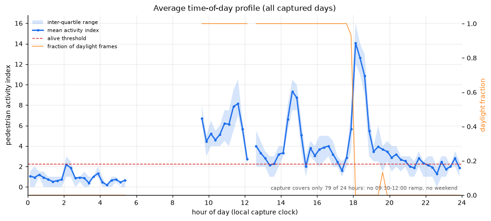
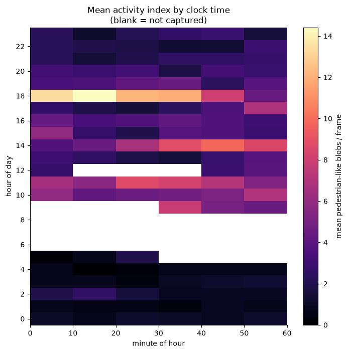
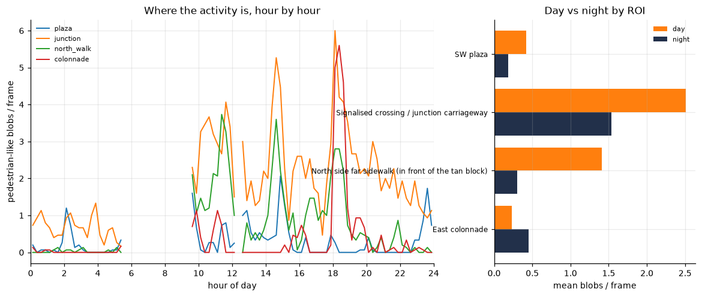
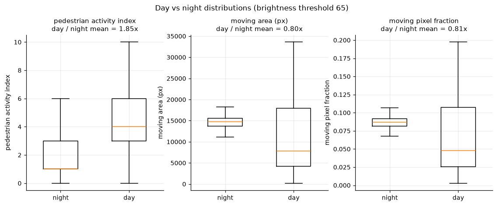
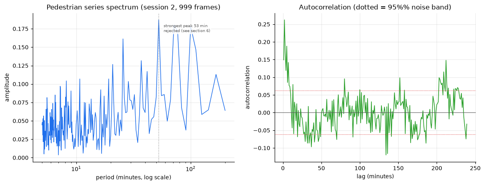
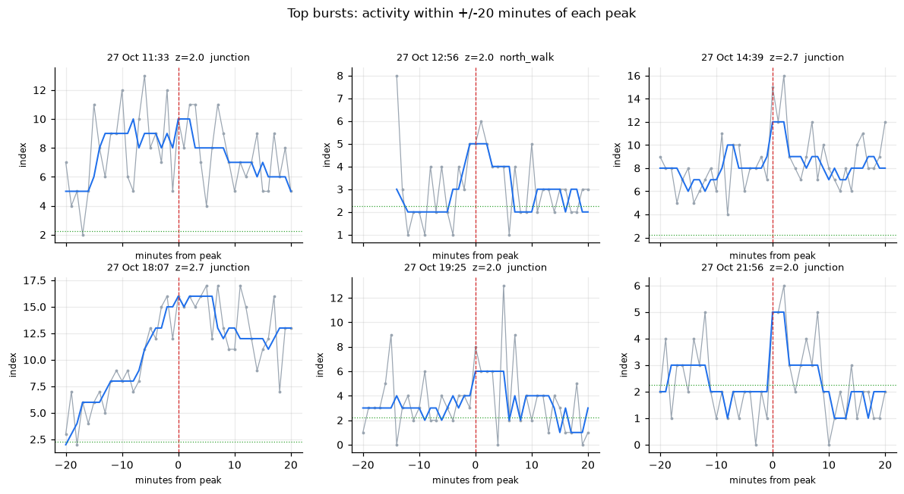
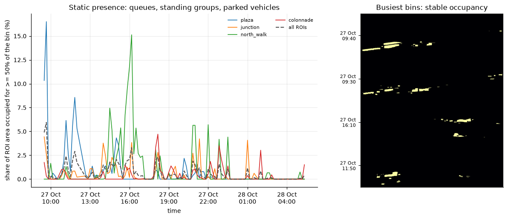
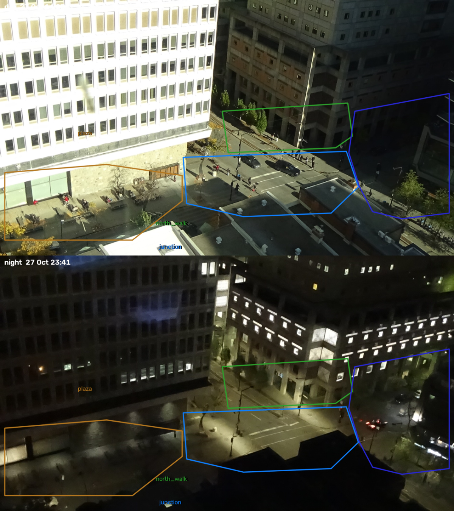
Burst montages
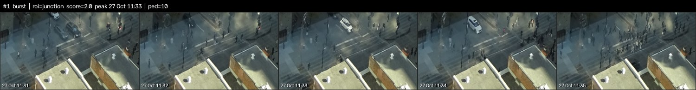
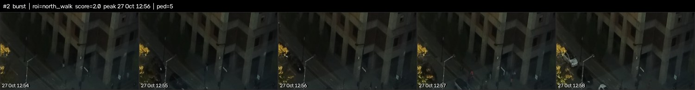
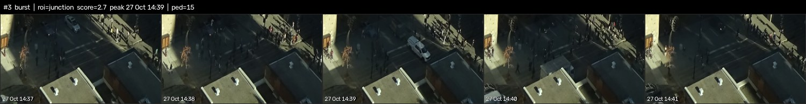
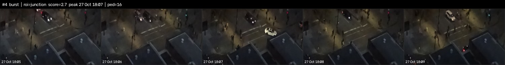
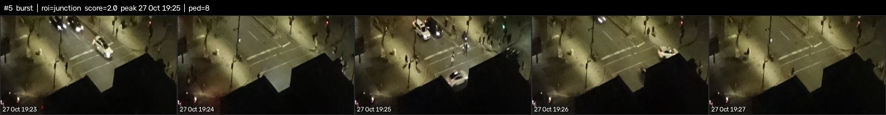
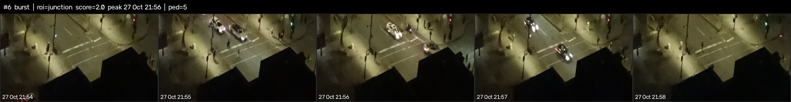
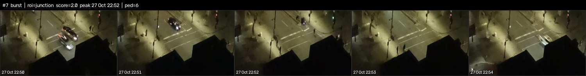